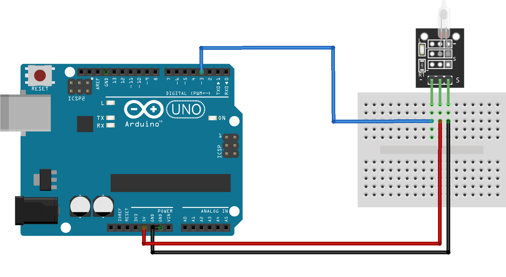

Модуль датчика наклона KY-017
Краткое описание
Модуль датчика наклона KY-017 - представляет ртутный датчик наклона распаянный на плате. Он содержит колбу с ртутным шариком. При изменении наклона платы шарик катается по колбе и замыкает/размыкает два контакта.
Схема подключения к Arduino

Код поключения к Arduino
int led_pin = 13; int switch_pin = 3; int val; void setup() { pinMode(led_pin, OUTPUT); pinMode(switch_pin, INPUT); } void loop() { val = digitalRead(switch_pin); if(val == HIGH) { digitalWrite(led_pin, HIGH); } else { digitalWrite(led_pin, LOW); } }